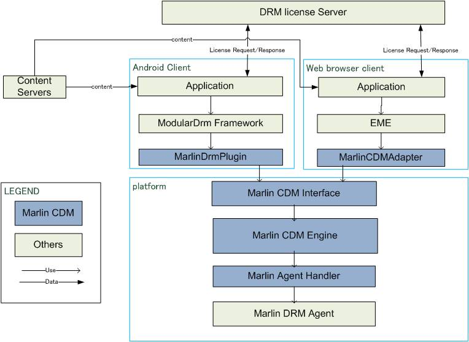
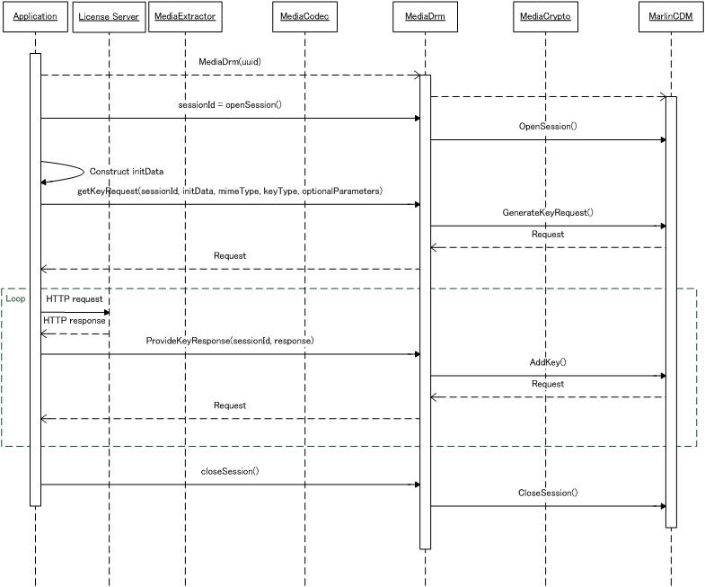
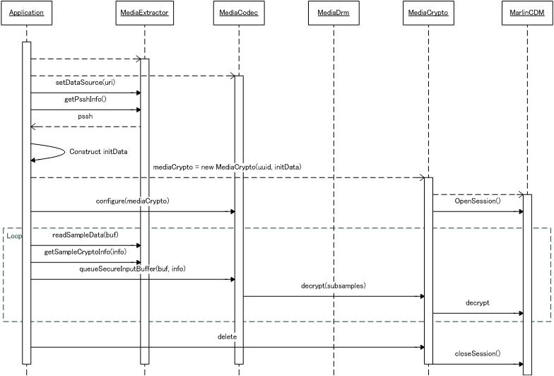

It describes Marlin CDM(Content Decryption Module) interface for Android and HTML5(EME). Marlin CDM can be used to operate the key acquisition of the marlin protected content and to decrypt the marlin protected content on web browser adnd web browser platform.
More...
It describes Marlin CDM(Content Decryption Module) interface for Android and HTML5(EME). Marlin CDM can be used to operate the key acquisition of the marlin protected content and to decrypt the marlin protected content on web browser adnd web browser platform.

Marlin CDM includes below parts.
- Marlin Drm Plugin : It is glue code to absorb API difference between Marlin CDM Interface and Android Modular Drm Framework.
- Marlin CDM Adapter : It is glue code to absorb API difference between Marlin CDM Interface and each browsers EME.
- Marlin CDM Interface : It is just aan interface between Android or Web browser framework and Marlin CDM implementation. It is included in Marlin CDM Engine in actual when it is built.
- Marlin CDM Engine : It is cdm implementation delegating HTTP transaction responsibility with License server to Application and manages the decrypt session and license management, and others required for as a CDM responsibility.
- Marlin Agent Handler : It is a Porting layer to support Marlin DRM solution in conjunction with specialized SDK. With this layer customization, implementer can use any Marlin DRM Agent.
The following diagram shows the sequence while acquiring marlin bb license for Android case.

- First, Application constructs MediaDrm object and call openSession() function to get sessionId.
- Application needs to create Marlin CDM specific initialization data to let CDM know the operation what application want to process. initData must be json object which includes action token for license acquisition. See API information of Marlin CDM Interface to know detail format of initData.
- Application then can call getKeyRequest function to send initData to generate HTTP request message in CDM and pass result to Application. The Request message is the json object which includes HTTP request message. See API information of Marlin CDM Interface to know detail format of Request data.
- Request message should be parsed by Application and retrieved HTTP request message should be sent to Marlin License server to proceed marlin bb license acquisition process, and then Application can get HTTP response message from server.
- ProvideKeyResponse function need to be called by Application to send response message to CDM. response message is also json object which includes HTTP response message. See API information of Marlin CDM Interface class to know detail format.
- During ProvideKeyResponse function, If the CDM notices that more HTTP transaction with server is needed for completing License acquisition process, Application will get HTTP request message through returned Request data. It is also json object and similar format of returned value of getKeyRequest function. Application can know if more message sending is needed or not from remaining steps value in Request data.
- After completing and application get 0 value in remaining step, Marlin license was stored in Marlin CDM and can be used later for content playback process. Application can call closeSession function to close MediaDrm and CDM session.
The following diagram shows the sequence while playing back marlin protected content for Android case.

- For Playback of the marlin protected content, Application needs to construct MediaExtractor and MediaCodec objects. These Extractor and Codec and lower level component in MultiMedia framework may need to be modified by Integrator to support to render marlin media format such as MP4 IPMP format and MP4 Common Encryption format.
- After the creation of such objects, Application can call setDataSource and getPsshInfo function to get metadata of media file, especially content protection box such as pssh, sinf box.
- Application needs to create initData, which is defined for sending the required information to CDM to do initialization of content decryption, such as loading marlin bb license and extract CEKs in Marlin DRM Agent. initData must have content protection box which was retrieved from getPsshInfo function. See API information of Marlin CDM Interface class to know detail format of initData.
- Application will construct MediaCrypto object, with passing initData for preparing decrypt session as described above.
- Next Application will call configure function of MediaCodec. The MediaCrypto object is registered with this method to enable the codec to decrypt content.
- And then it is ready to get sample and crypto info such as IV, kid, subsample structre from MediaExtractor, via readSampleData method and getSampleCryptoInfo method.
- When these sample metadata is acquired, queueSecureInputBuffer method can be used to oeprate the decryption of protected sample by CDM or lower level module.
- According to the integrators Marlin CDM implementation, decryption can be done on Platform HW and then decrypted data can only be supplied to Decoder without passing decrypted data to Application.
 1.8.3.1
1.8.3.1